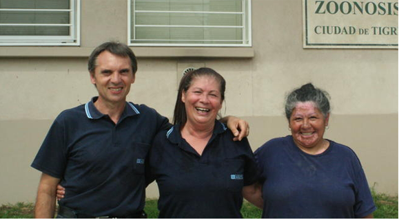

The Team

Unidos por la Vida Animal, se forma con un grupo de habitantes y contribuyentes de la Localidad de Tigre en el año 1999 , que se une ante las matanzas ocurridas dentro de el Centro de Zoonosis . Este grupo se reune con el Intendente y le hacen una propuesta diferente, la de empezar a castrar, vacunar y desparasitar para poder dar en adopción dichos animales. Este grupo formado por mujeres y hombres de esta Ciudad se distribuyeron las tareas, de lunes a domingos ,o sea los 365 días del año.Consistió,en alimentarlos, mantener la higiene del lugar y sacarlos a pasear . El Profesional Veterinario, comenzo a castrar 30 animales por día, contando con la ayuda de U.V.A que colaboraba llevando los animales preparándoles para dicha operación y su posterior recuperación para luego dar en adopción. U.V.A modifico el lugar ya que se inundaba y por ello los animales morían ahogandose en sus jaulas.
Los perros ya no estaban en jaulas de 2 x 2, si no que se construyeron caniles con patios donde podían moverse ,caminar y correr, En invierno se colocaron estufas con interruptores y todo esto fue realizado por la Asociación.. Cuando las autoridades por el año 2006 deciden hacer un nuevo Zoonosis, U.V.A presenta por iniciativa de una Voluntaria, un plano de instalaciones traído de E.E.U.U y dicho plano es aceptado y adaptado al lugar. La construcción se termina en el año 2007 y se realiza la mudanza con los animales, U.V.A había cumplido otra etapa.........se habían cambiado las instalaciones y se podían ahora realizar mas tareas aun, en beneficio de los animales !!!!!! Había que empezar con campañas de esterilización masivas y sostenidas ,para ello se necesitan mas Veterinarios. La Asociación habla con las Autoridades Municipales sobre la necesidad de aumentar las esterilizaciones, mayor cantidad de consultas y vacunación para prevencion de enfermedades.
Como la demanda es cada ves mayor , hoy el Centro de Zoonosis cuenta con 5 Profesionales Municipales y un Profesional contratado por la Cooperadora. Como ayuda U.V.A a los Veterinarios y al Municipio y a la Población de Tigre. ? Tigre es un Municipio de 330.000 habitantes que tienen un perro cada 3 habitantes,para poder mermar dicha cantidad , los Voluntarios organizan en los diferentes Barrios campañas de esterilización que realiza gratuitamente el Municipio con sus Profesionales. U.V.A dona hoy dia vacunas quintuples y medicacion que se aplica dentro del Centro de Zoonosis La Asociación ,junto con Municipio trabajan día a día para poder mejorar el Bienestar que conlleva al Bienestar Humano.